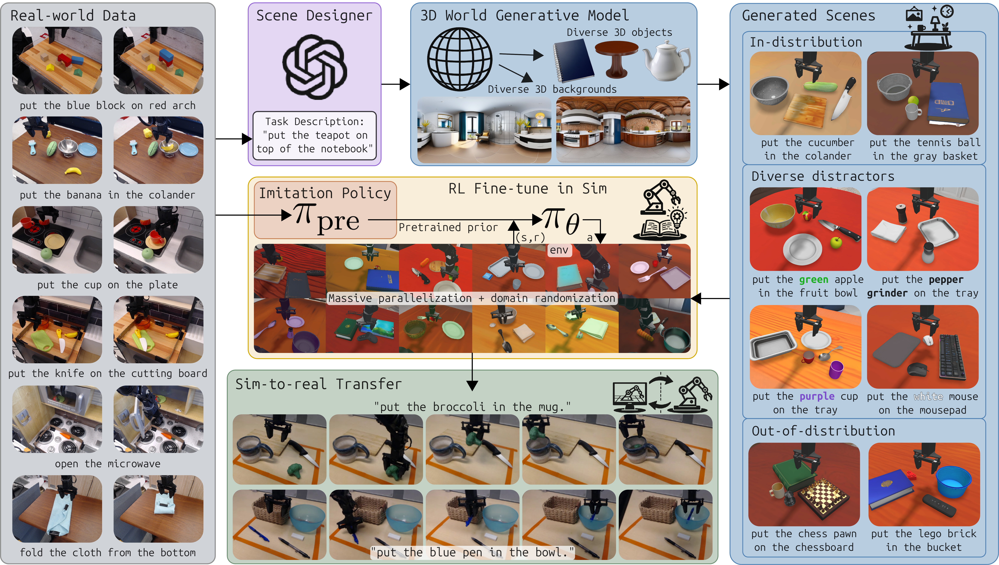
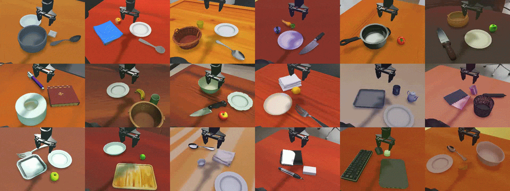
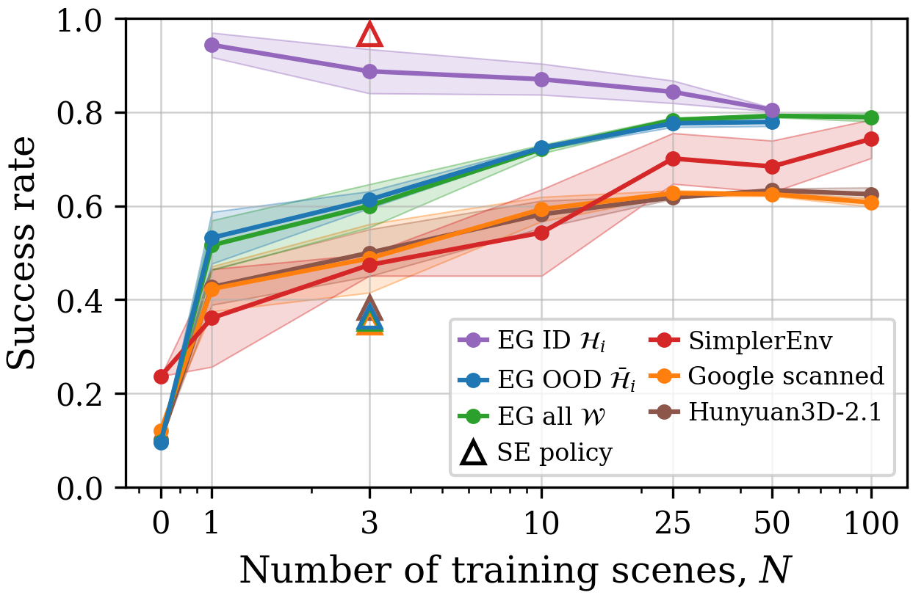
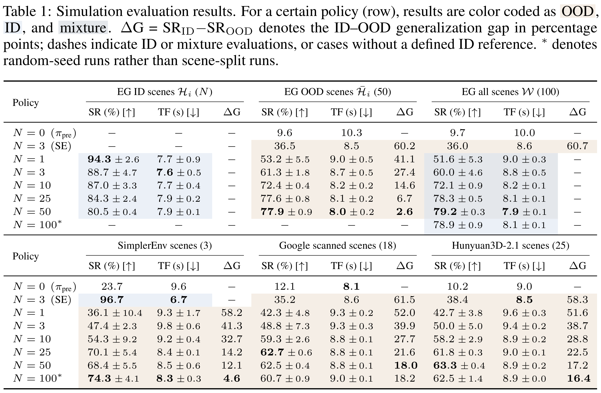

Results Preview
Abstract
The strong performance of large vision–language models (VLMs) trained with reinforcement learning (RL) has motivated similar approaches for fine-tuning vision–language–action (VLA) models in robotics. Many recent works fine-tune VLAs directly in the real world to avoid addressing the sim-to-real gap. While real-world RL circumvents sim-to-real issues, it inherently limits the generality of the resulting VLA, as scaling scene and object diversity in the physical world is prohibitively difficult. This leads to the paradoxical outcome of transforming a broadly pretrained model into an overfitted, scene-specific policy. Training in simulation can instead provide access to diverse scenes, but designing those scenes is also costly. In this work, we show that VLAs can be RL fine-tuned across broad scene and object distributions and with reduced labor by leveraging 3D world generative models. Using these models together with a language-driven scene designer, we generate 100 diverse interactive scenes containing unique objects and backgrounds, enabling scalable and highly parallel policy learning. Starting from a pretrained imitation baseline, our approach increases simulation success from 9.7% up to 79.8% while achieving a 1.25× speedup in task completion time. We further demonstrate successful sim-to-real transfer enabled by the quality of the generated scenes together with domain randomization, improving real-world success from 21.7% to 75% and achieving a 1.13× speedup. Finally, we further highlight the benefits of leveraging the effectively unlimited data from 3D world generative models through an ablation study showing that increasing scene diversity directly improves zero-shot generalization.
3D generative world models allow for scalable parallelized RL!
VLA RL fine-tuning across 100 generated scenes with domain randomization. 3D generative world models allow for a scalable way to fine-tune VLAs while maintaining scene generality.

Simulation Results
Increasing the number of training scenes $N$ improves zero-shot performance on out-of-distribution (OOD) scenes. Scaling from 1 to 50 generated training scenes raises success on held-out EmbodiedGen scenes from 53.2% to 77.9%, a 24.7-percentage-point improvement. Over the same range, in-distribution success decreases from 94.3% to 80.5%, narrowing the generalization gap from 41.1 to 2.6 percentage points. Generalization also improves on SimplerEnv, Google Scanned Objects, and Hunyuan3D-2.1 scenes, showing benefits beyond the training asset source. The largest OOD gains occur by approximately 25–50 scenes; later saturation may partly reflect reduced sampling per scene under the fixed compute budget. Overall, policies trained on 50–100 generated scenes achieve approximately 79% success across the full 100-scene set, compared with 9.7% for the imitation baseline.


Sim-to-Real Examples
We zero-shot sim-to-real deploy a policy trained on $N=100$ EmbodiedGen scenes and compare its performance with the VLA's initial performance. RL fine-tuning with 100 generated scenes increases success from 21.7% to 75% while increasing the average task completion speed by 13% over 240 experiments across 12 real-world scenes.
Stack blue tea cup on the yellow tea cup. The initial VLA misses the grasp on the blue tea cup and erroneously moves toward the yellow tea cup without it. It then gets confused and grasps the purple tea cup instead. After RL fine-tuning, the policy grasps the correct tea cup and stacks it onto the yellow one.
Put the green marker in the basket. The initial VLA misses the grasp on the green marker and then erroneously moves over to the basket, only to push it out-of-reach. After RL fine-tuning, the policy correctly places the green marker inside the basket.
Put the red knife on the cutting board. The initial VLA picks up the red knife but then drops it in confusion, hovering until timeout. After RL fine-tuning, the policy also picks up the red knife but finishes placing it onto the cutting board.
Put the screwdriver in the basket. The initial VLA attempts to grab the screwdriver but then gets confused and puts the knife in the basket instead. After RL fine-tuning, the policy correctly places the screwdriver into the basket.
Citation
If our work has proved useful, please consider citing our work:@misc{choi2026scalingsimtorealvlareinforcementlearning,
title={Scaling Sim-to-Real VLA Reinforcement Learning with Generative 3D Worlds},
author={Andrew Choi and Xinjie Wang and Zhizhong Su and Wei Xu},
year={2026},
eprint={2603.18532},
archivePrefix={arXiv},
primaryClass={cs.RO},
url={https://arxiv.org/abs/2603.18532},
}